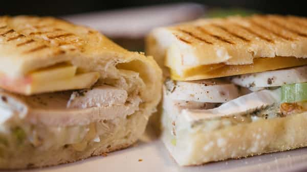
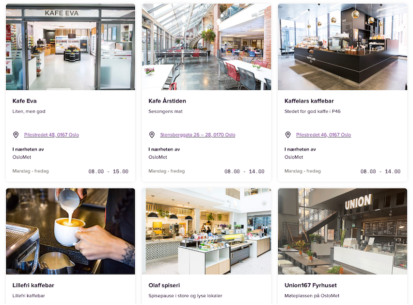

Som student kan det bli lange og intensive dager. Noen dager blir ikke helt som planlagt, og det er derfor viktig å ha tilgang til billig og sunn mat i studentområdene. I samarbeid med studentsamskipnaden i Oslo (SiO), er det derfor etablert en rekke spiserier og cafeer rundt om kring ved de ulike campusene til de forskjellige studeiestedene. Her finnes et bredt utvalg av både varme og kalde retter. Utvalget varierer fra sted til sted, og vi anfebaler at du gjør deg kjent med tilbudet på dine nærliggende spisesteder.
Vi vil at du skal føle deg trygg som student. Dette innebærer ikke bare at kvaliteten på undervisningen og det faglige innholdet skal være på topp, men vi vil også at du skal kunne stole på at du får gode priser på mat og drikke hos oss. Derfor publiserer vi menyer hos våre spisesteder på nett hver uke, med oppgitte priser. Prisene er tilpasset studentøkonomi, med gode rabatter og kaffe-deals.
Klikk deg inn på ditt aktuelle spisested og sjekk meny og priser via denne linken. Ved behov for spesialdiett er du hjertlig velkommen til å ta kontakt med spisestedene, slik at du er sikker på at de serverer noe som du kan spise.
Mange studenter på OsloMet har sitt daglige virke på pilstredet campus, og det var derfor naturlig for både oss og SiO å sørge for god tilgang til spiserier i dette området. På bildet under ser du noen av SiOs spisesteder, og ved å trykke på bildet får du lese mer om dem på SiOs hjemmesider.
I tillegg til mattilbudet som er utformet av SiO finnes det er rekke private aktører i området rundt Pilestredet. Dette inkluderer tilbud som fast-food (kebab), kiosk (Narvesen), dagligvare (Joker) og flere cafeer og restauranter (som Tullin café). Ta deg en tur i området og bli kjent med de ulike tilbudene i nærmiljøet, kanskje du finner en ny favoritt!
Selvom vårt største campus befinner seg sentralt i Oslo, er det viktig å få med seg at OsloMet også har campus på Kjeller i Lillestrøm. Her finnes studeretninger som videreutdannelse som jordmor for sykepleiere, produktdesign og trafikkpedagogikk. Lillestrøm er ellers et av områdene i Norge som er i størst vekst, og det merkes for alle studenter som bor og/eller studerer på Kjeller. Her dukker det stadig opp nye tilbud og etterspørselen etter både bolig og andre nødvendigheter er høy. Derfor kan du være trygg på å få plass i SiOs studentleiligheter, rett ved campus Kjeller.
For å være sikre på at alle våre studenter får et godt tilbud utenfor det rent faglige har vi også spiseri på vårt campus ved Kjeller!
På campus Kjellers eget spiseri, Hannas spiseri, serveres både varme og kalde retter til en gunstig pris. Dette spiseriet får vært gode tilbakemeldinger, og vi anbefaler å ta turen innom. Her serveres blant annet:
I tillegg til Hannas spiseri finnes en rekke gode tilbud fra andre aktører rett ved campus. Dette gjelder både dagligvarebutikker, caféer og koisker.
Våre spisesteder er inkluderende og utformet for å kunne håndtere en rekke dietter og allergiske tilstander. Visse allergier og tilstander krever i midlertid at vi tar større hensyn, og dersom du har slike typer allergier, som sterk allergi mot egg, hvete eller løk ber vi om at du kontakter ditt akutelle spiseri slik at vi kan være behjelpelige med å tilby mat som du kan spise, uten at du skal være engstelig for helsen din.
Når det kommer til andre typer preferanser, som halal, vegetar, vegan, minimalt prosessert med mer, ber vi om at du undersøker hvordan tilbudet er i din akutelle cafè. Vi har noe for enhver smak, men mindre du har en dokumentert allergi vil vi ikke lage mat basert på preferanser.
Kontaktinformasjon til våre spiserier finner du her.